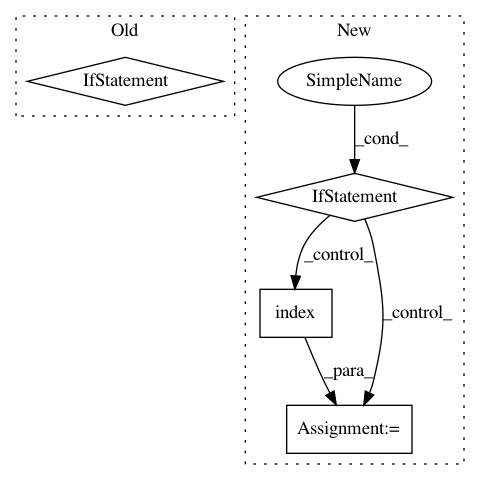

5d2a59fd4cf708d285d0db8ff3522c9156d2c4a9,src/sdk/pynni/nni/_graph_utils.py,TorchModuleGraph,unpack_manually,#TorchModuleGraph#,538
Before Change
self.input_to_node[_debug_input].remove(node)
// add the following nodes of _output into the input_to_node[_debug_input]
self.input_to_node[_debug_input].extend(self.input_to_node[_debug_output])
if _debug_input in self.output_to_node and _debug_output in self.output_to_node:
// output_to_node[_debug_output] is a NodePyGroup, because one output
// tensor only can be generated by one node.
self.output_to_node[_debug_output] = self.output_to_node[_debug_input]
self.unpacked = True
def _build_graph(self):
After Change
self.input_to_node[_debug_input].extend(self.input_to_node[_debug_output])
// just remove the _debug_output from the grapgh index. So that we can also skip
// the construct and tuple
if _debug_output in self.input_to_node:
for following_node in self.input_to_node[_debug_output]:
_tmp_index = following_node.inputs.index(_debug_output)
following_node.inputs[_tmp_index] = _debug_input
self.unpacked = True
def _build_graph(self):
In pattern: SUPERPATTERN
Frequency: 3
Non-data size: 4
Instances
Project Name: microsoft/nni
Commit Name: 5d2a59fd4cf708d285d0db8ff3522c9156d2c4a9
Time: 2020-08-12
Author: 49771382+zheng-ningxin@users.noreply.github.com
File Name: src/sdk/pynni/nni/_graph_utils.py
Class Name: TorchModuleGraph
Method Name: unpack_manually
Project Name: microsoft/nni
Commit Name: aa51e79cdbcbedbedeef68bcef646b2d43993753
Time: 2019-11-25
Author: Quanlu.Zhang@microsoft.com
File Name: src/sdk/pynni/nni/ppo_tuner/ppo_tuner.py
Class Name: PPOTuner
Method Name: _actions_to_config
Project Name: ray-project/ray
Commit Name: 58efec0f2bc7e8de2ea9b89ec638d4a0a2d60537
Time: 2020-06-12
Author: rliaw@berkeley.edu
File Name: python/ray/util/sgd/torch/distributed_torch_runner.py
Class Name: LocalDistributedRunner
Method Name: _try_reserve_and_set_cuda